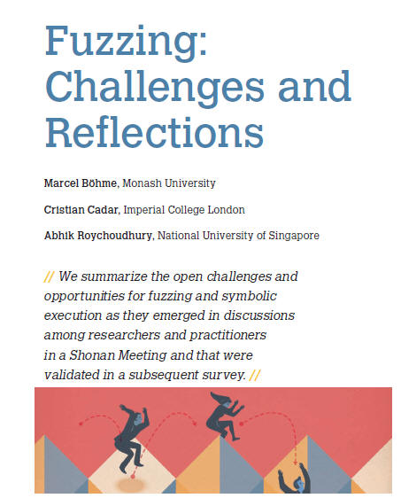
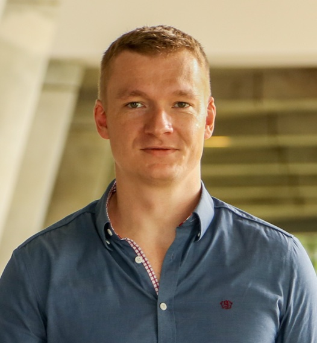

+Overview:
Software almost always has vulnerabilities. Many of these cause serious
problems such as software crash and leaking sensitive user
information. To fix bugs, software engineers have been
fighting an endless battle with bugs. The cost of this battle is
enormous—$312 billion per year globally as of 2012 according to Cambridge
University research (in comparison, the GDP of Singapore is $308 billion
as of 2014). This high cost is due to that software developers spend about 50%
of their time debugging. We are conducting research on automatically finding
vulnerabilities in program binaries by combining black-box or grey-box fuzzing
with symbolic execution approaches. In black-box or grey-box fuzzing, the logic
of the program is not analyzed, whereas symbolic execution approaches proceed by
a semantic analysis of the program behavior. A lot of our research can be seen
as a targeted search where we are trying to reach target locations, either to
reproduce a crash or to uncover more behavior so that vulnerabilities can be
uncovered.
One of the key innovations in our approach is that the analysis for finding vulnerabilities works directly on the program binaries - no source code is needed. Another key innovation is the development of scalable search strategies to guide the symbolic analysis for common file-format processing programs such as PDF, PNG, WAV. We are also working on improving grey-box fuzzing technology in its weak-point, namely behavioral coverage. Grey-box fuzzing technology generates many inputs with the goal to crash the program, but may end up covering few paths in the program since no semantic analysis is involved. In our latest work, we have improved the search heuristics inside fuzzers to drastically improve the coverage without resorting to costly symbolic analysis. Thus, our approach for finding vulnerabilities is two pronged - improve the scalability of the symbolic execution or semantic approaches, and improve the behavioral coverage of fuzzing or syntactic approaches.
Viewpoint

IEEE Software Article reflecting on fuzzing as a field.
Key Publications
Coverage-based Greybox Fuzzing as Markov Chain (pdf
)
Marcel Böhme, Van Thuan Pham, Abhik Roychoudhury
23rd ACM Conference on Computer and Communications Security (CCS) 2016.
Directed Greybox Fuzzing ( PDF )
Marcel Böhme,
Van Thuan Pham, Manh-Dung Nguyen, Abhik Roychoudhury
24th ACM Conference on Computer and Communications Security (CCS) 2017.
Smart Greybox Fuzzing ( PDF, Sample News 1, Sample News 2 )
Van-Thuan Pham, Marcel Böhme, Andrew E. Santosa, Alexandru Razvan Caciulescu, Abhik Roychoudhury
IEEE Transactions on Software Engineering, 47(9), 2021.
Linear-time Temporal Logic guided Greybox Fuzzing ( PDF )
Ruijie Meng, Zhen Dong, Jialin Li, Ivan Beschastnikh, Abhik Roychoudhury
IEEE/ACM 44th International Conference on Software Engineering (ICSE) 2022.
Fuzzing: Challenges and Reflections
( PDF )
Marcel Böhme, Cristian Cadar, Abhik Roychoudhury
IEEE Software, 38(3), 2021.
Technology
-
AFLGo: Directed fuzzer
-
AFLFast: Integrated into AFL now
-
TimeMachine: Android app fuzzing
-
AFLSmart: Structure aware fuzzing
-
AFLNet: Response code based stateful fuzzing
-
... < more to come, watch this space>
News:
2021: AsiaCCS21 paper on fault localization in binaries using fuzzing, gets Best paper award.
2021: Perspectives article on Fuzzing and Symbolic Execution, appeared in IEEE Software.
2020: TimeMachine tool for fuzz testing Android apps released ( Paper in ICSE 2020, Received Distinguished Paper Award).
2019: Shonan Meeting on Fuzzing and Symbolic execution organized, see here.
2019: Releasing the AFLSmart tool which fuzzes applications processing file formats. Read the paper here. See Sample news (the register), other news.
2017-18: Released the directed fuzzer AFLGo tool. AFLGo is the first directed grey-box fuzzer. Read the paper here.
2016-17: Released the AFLfast tool, which improves AFL fuzzer - see Hacker news. This has led to changes in the widely used AFL Fuzzer. Read the paper here.
All Publications:
[Usenix Security 23]
Bleem: Packet Sequence Oriented Fuzzing for Protocol Implementations
Zhengxiong Luo, Junze Yu, Feilong Zuo, Jianzhong Liu, Yu Jiang, Ting Chen, Abhik Roychoudhury, Jiaguang Sun
Usenix Security Symposium 2023.
[ASE 22]
Efficient Greybox Fuzzing to Detect Memory Errors ( PDF )
Jinsheng Ba, Gregory J Duck, Abhik Roychoudhury
37th IEEE/ACM International Conference on Automated Software Engineering (ASE) 2022, Distinguished Paper Award
[Usenix Security 22]
Stateful Greybox Fuzzing ( PDF )
Jinsheng Ba, Marcel Boehme, Zahra Mirzamomen, Abhik Roychoudhury
31st USENIX Security Symposium 2022.
[ICSE22]
Linear-time Temporal Logic guided Greybox Fuzzing ( PDF )
Ruijie Meng, Zhen Dong, Jialin Li, Ivan Beschastnikh, Abhik Roychoudhury
IEEE/ACM 44th International Conference on Software Engineering (ICSE) 2022.
[TSE21]
Smart Greybox Fuzzing (PDF, Sample News 1, Sample News 2 )
Van-Thuan Pham, Marcel Böhme, Andrew E. Santosa, Alexandru Razvan Caciulescu, Abhik Roychoudhury
IEEE Transactions on Software Engineering, 47(9), pages 1980-1997, 2021.
[ASE 2021]
Scalable fuzzing of program binaries with e9AFL (
PDF )
Xiang Gao, Gregory J Duck, Abhik Roychoudhury
International Conference on Automated Software Engineering (ASE) 2021.
[ESEC-FSE 2021]
Flaky Test Detection in Android via Event Order
Exploration ( PDF )
Zhen Dong, Abhishek Tiwari, Xiao Liang Yu, Abhik Roychoudhury
ACM Joint European Software Engineering Conference and Symposium
on the Foundations of Software Engineering (ESEC/FSE) 2021.
[ASIACCS 21]
Localizing Vulnerabilities Statistically From One Exploit ( PDF )
Shiqi Shen, Aashish Kolluri, Zhen Dong, Prateek Saxena, Abhik Roychoudhury
16th ACM ASIA Conference on Computer and Communications Security (ASIACCS) 2021. Best paper award
[IEEE Software21]
Fuzzing: Challenges and Reflections
(
PDF )
Marcel Böhme, Cristian Cadar, Abhik Roychoudhury
IEEE Software, 38(3), pages 79-86, 2021.
[ICST20]
AFLNet: A Greybox Fuzzer for Network Protocols ( PDF , Video )
Van-Thuan Pham, Marcel Böhme, Abhik Roychoudhury
IEEE International Conf. on Software Testing Verification and Validation (ICST) 2020.
[TOSEM20]
KLEESpectre: Detecting Information Leakage through Speculative Cache Attacks via Symbolic Execution
( PDF )
Guanhua Wang, Sudipta Chattopadhyay, AKBiswas, Tulika Mitra, Abhik Roychoudhury
ACM Transactions on Software Engineering and Methodology (TOSEM), 2020.
[ICSE-Workshop]
Fitness Guided Vulnerability Detection with Greybox Fuzzing ( PDF )
RK Medicherla, R Komondoor, Abhik Roychoudhury
ACM/IEEE 42nd International Conference on Software Engineering (ICSE) 2020
Workshop on Search based Software Testing.
[ICSE20]
Time-travel Testing of Android Apps
( PDF )
Zhen Dong, Marcel Böhme, Lucia Cojocaru, Abhik Roychoudhury
ACM/IEEE 42nd International Conference on Software Engineering (ICSE) 2020.
Distinguished Paper Award
[ICSE20]
Fuzz Testing based Data Augmentation to Improve Robustness of Deep Neural Networks
( PDF )
Xiang Gao, Ripon K. Saha, Mukul R. Prasad, Abhik Roychoudhury
ACM/IEEE 42nd International Conference on Software Engineering (ICSE) 2020.
[TSE20-b]
oo7: Low-overhead Defense
against Spectre Attacks via Binary Analysis (PDF)
Guanhua Wang, Sudipta Chattopadhyay, Ivan Gotovchits, Tulika Mitra, Abhik
Roychoudhury
IEEE Transactions on Software Engineering, Sample
News.
[NDSS19]
Neuro-Symbolic Execution: Augmenting Symbolic Execution with Neural
Constraints ( PDF )
Shen Shiqi, Shweta Shinde, Soundarya Ramesh, Abhik Roychoudhury, Prateek Saxena
Network and Distributed Systems Security Symposium (NDSS), 2019.
[TSE19]
Coverage-based Greybox Fuzzing as Markov Chain ( PDF )
Marcel Böhme,
Van Thuan Pham, Abhik Roychoudhury
IEEE Transactions on Software Engineering (TSE), To appear.
(expanded version of CCS16 paper).
[ASE18]
Android Testing via Synthetic Symbolic Execution ( PDF )
Xiang Gao, Shin Hwei Tan, Zhen Dong, Abhik Roychoudhury
ACM/IEEE International Conference on Automated Software Engineering (ASE) 2018.
[CCS17]
Directed Greybox Fuzzing ( PDF )
Marcel Böhme,
Van Thuan Pham, Manh-Dung Nguyen, Abhik Roychoudhury
24th ACM Conference on Computer and Communications Security (CCS) 2017.
[FASE17]
Bucketing Failing tests using Symbolic Analysis (pdf
)
Van Thuan Pham, Saakar Khurana, Subhajit Roy, Abhik Roychoudhury
International Conference on Foundational Aspects of Software Engineering (FASE) 2017.
[CCS16]
Coverage-based Greybox Fuzzing as Markov Chain (pdf
)
Marcel Böhme, Van Thuan Pham, Abhik Roychoudhury
23rd ACM Conference on Computer and Communications Security (CCS) 2016.
[ASE16]
Model-based Whitebox Fuzzing for Program Binaries (pdf
)
Van Thuan Pham, Marcel Böhme, Abhik Roychoudhury
IEEE/ACM International Conference on Automated Software Engineering (ASE) 2016.
[ICSE15]
Hercules: Reproducing Crashes
in Real-World Application Binaries (pdf
)
Van Thuan Pham, Wei Boon Ng, Konstantin Rubinov, Abhik Roychoudhury
ACM/IEEE International
Conference on Software Engineering (ICSE) 2015.
[ISSTA14]
CoREBench: Studying Complexity of Regression Errors (pdf
)
Marcel Böhme, Abhik Roychoudhury
ACM International Symposium on Software Testing and Analysis (ISSTA) 2014.
[ESEC-FSE13]
Regression Tests to Expose
Change Interaction Errors (pdf
)
Marcel Böhme, Bruno C.d.S. Oliveira, Abhik Roychoudhury
Joint meeting of
ACM SIGSOFT symposium and European conference on Foundations of software engineering (ESEC-FSE) 2013.
[ICSE13]
Partition-based Regression Verification (pdf
)
Marcel Böhme, Bruno C.d.S. Oliveira, Abhik Roychoudhury
ACM/IEEE International Conference on Software Engineering (ICSE) 2013.
[TOSEM13]
Path Exploration based on Symbolic Output (pdf
)
Dawei Qi, Hoang D.T. Nguyen, Abhik Roychoudhury
ACM Transactions on Software Engineering and Methodology (TOSEM), 22(4), 2013. Conference paper appeared in ESEC-FSE 2011.
Current Members:
Principal Investigator:
Post-doc
 |
Yannic Noller |
PhD students
{kind=link}
.png){kind=link}
Alumni
|  | Marcel Boehme |
Faculty Member, Max-Plack Institute of Security and
Privacy.
| Thuan Pham Van |
Lecturer (Asst Prof), University of Melbourne
 |
Zhen Dong |
Assoc Prof, Fudan University.
+Acknowledgements:
The later parts of the research are integrated as part of an umbrella project, TSUNAMi, funded by a substantial research grant from NRF (National Research Foundation, Singapore). This was continued via the National Satellite of Excellence in Trustworthy Software Systems, at Singapore, funded by NRF. This support is gratefully acknowledged.